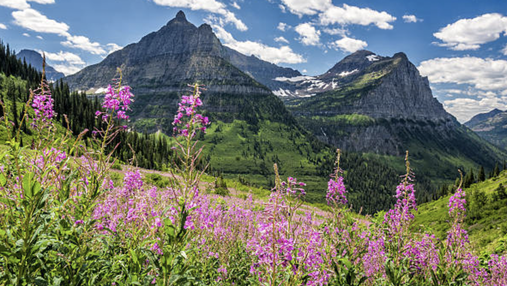
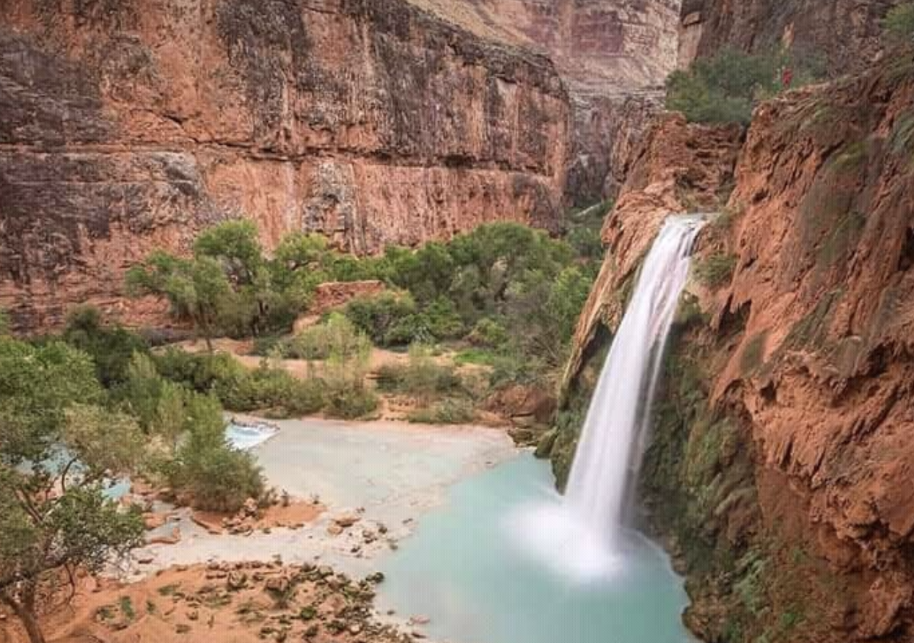
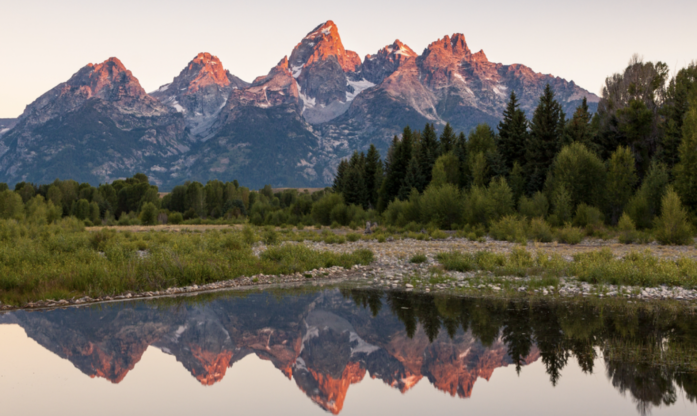
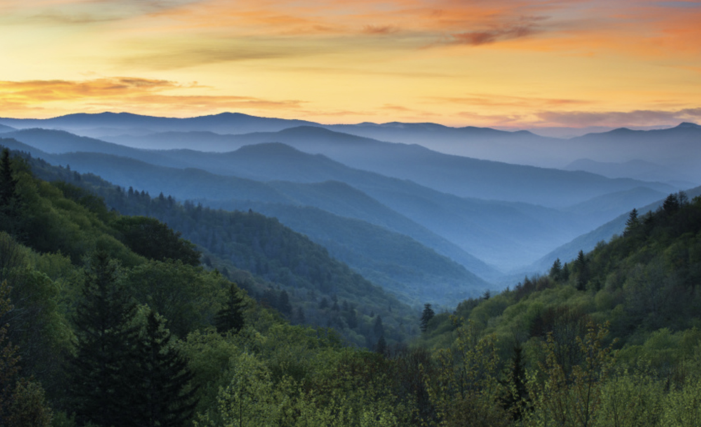
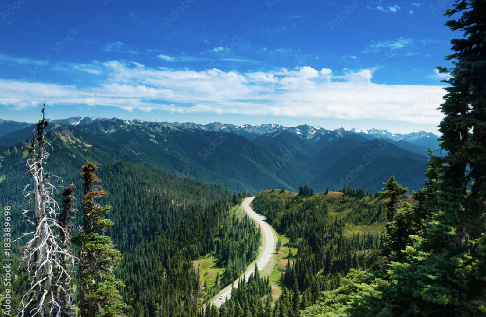
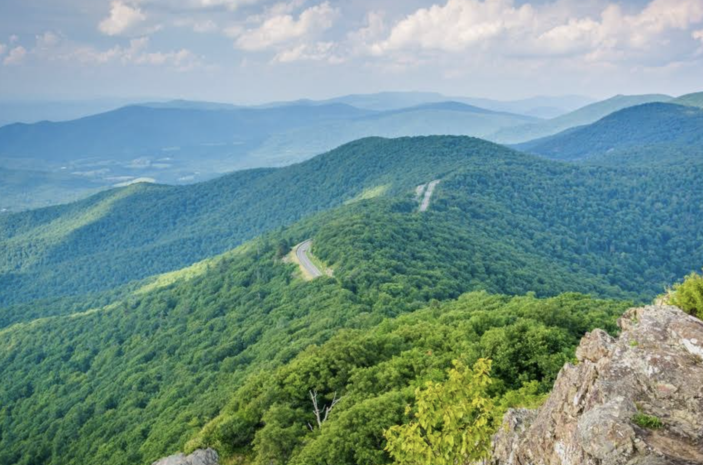
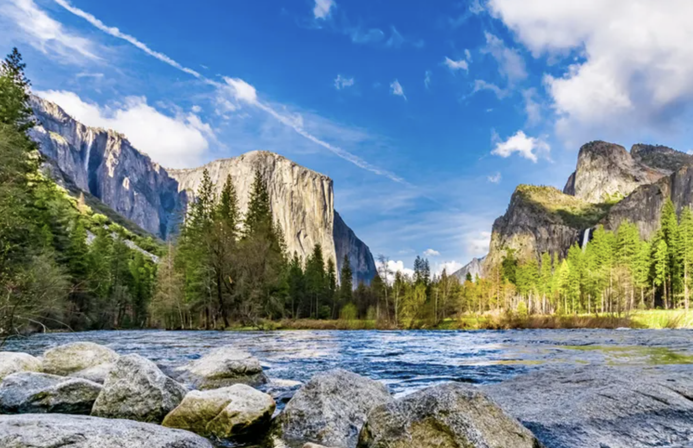

-

Denali National Park
Denali National Park and Preserve encompasses 6 million acres of Alaska’s interior wilderness. Its centerpiece is 20,310-ft.-high Denali, North America’s tallest peak.
-

Glacier National Park
Glacier National Park is a 1,583-sq.-mi. wilderness area in Montana's Rocky Mountains, with glacier-carved peaks and valleys running to the Canadian border.
-

Grand Canyon National Park
Grand Canyon National Park, in Arizona, is home to much of the immense Grand Canyon, with its layered bands of red rock revealing millions of years of geological history.
-

Grand Teton National Park
Rising above a scene rich with extraordinary wildlife, pristine lakes, and alpine terrain, the Teton Range stands as a monument to the people who fought to protect it.
-

Great Basin National Park
Great Basin is one of the least visited national parks, making your time here even more special.
-

Great Smoky Mountains National Park
The Great Smoky Mountains are a mountain range rising along the Tennessee–North Carolina border in the southeastern United States.
-

Olympic National Park
Olympic National Park is on Washington's Olympic Peninsula in the Pacific Northwest.
-

Rocky Mountain National Park
Rocky Mountain National Park in northern Colorado spans the Continental Divide and encompasses protected mountains, forests and alpine tundra.
-

Shenandoah National Park
Shenandoah National Park extends along the Blue Ridge Mountains in the U.S. state of Virginia.
-

Yosemite National Park
First protected in 1864, Yosemite National Park is best known for its waterfalls, but within its nearly 1,200 square miles, you can find deep valleys, grand meadows, ancient giant sequoias, a vast wilderness area, and much more.
-

Zion National Park
Zion National Park is a southwest Utah nature preserve distinguished by Zion Canyon’s steep red cliffs. Zion Canyon Scenic Drive cuts through its main section, leading to forest trails along the Virgin River.